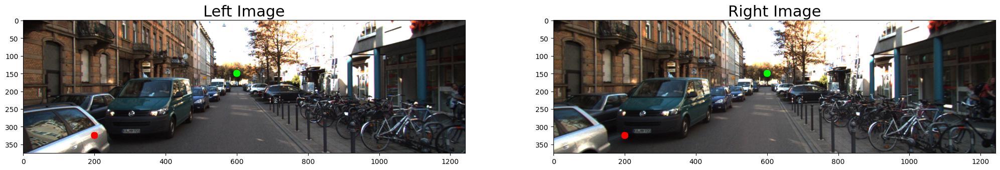
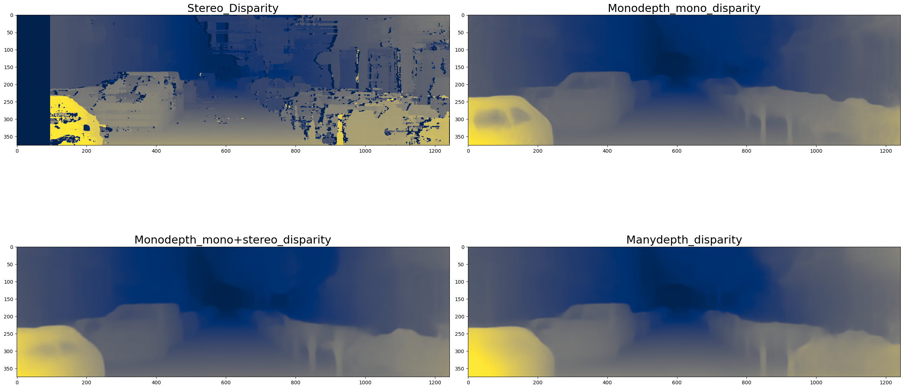
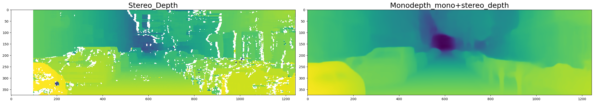
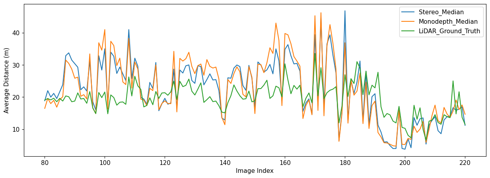

Classical stereo
Metric geometry is available from a calibrated pair, but textureless areas, occlusion, and parameter choices create missing or noisy estimates.
Project 04
A notebook-based comparison of classical stereo matching, monocular depth, multi-frame depth, and LiDAR measurements on autonomous-driving imagery.
Interactive results
Each view is generated from the same street scene, so changes in edge quality, smoothness, and scale are directly comparable.

The horizontal shift of the marked point between cameras is disparity. Larger disparity generally means the point is closer to the camera.

StereoSGBM preserves sharp local changes but produces gaps and noise. Learned models return denser, smoother surfaces with different input requirements.

The stereo result uses camera baseline and focal length. The learned result is scaled before comparison because monocular predictions do not recover absolute metric scale on their own.

The validation plot compares median stereo and Monodepth estimates against projected LiDAR measurements across the image sequence.
What the comparison shows
Metric geometry is available from a calibrated pair, but textureless areas, occlusion, and parameter choices create missing or noisy estimates.
One camera simplifies hardware and produces dense output, but absolute scale is ambiguous and learned priors can smooth object boundaries.
ManyDepth uses temporal context to improve structure while retaining a single-camera deployment path.
Open the notebook ↗